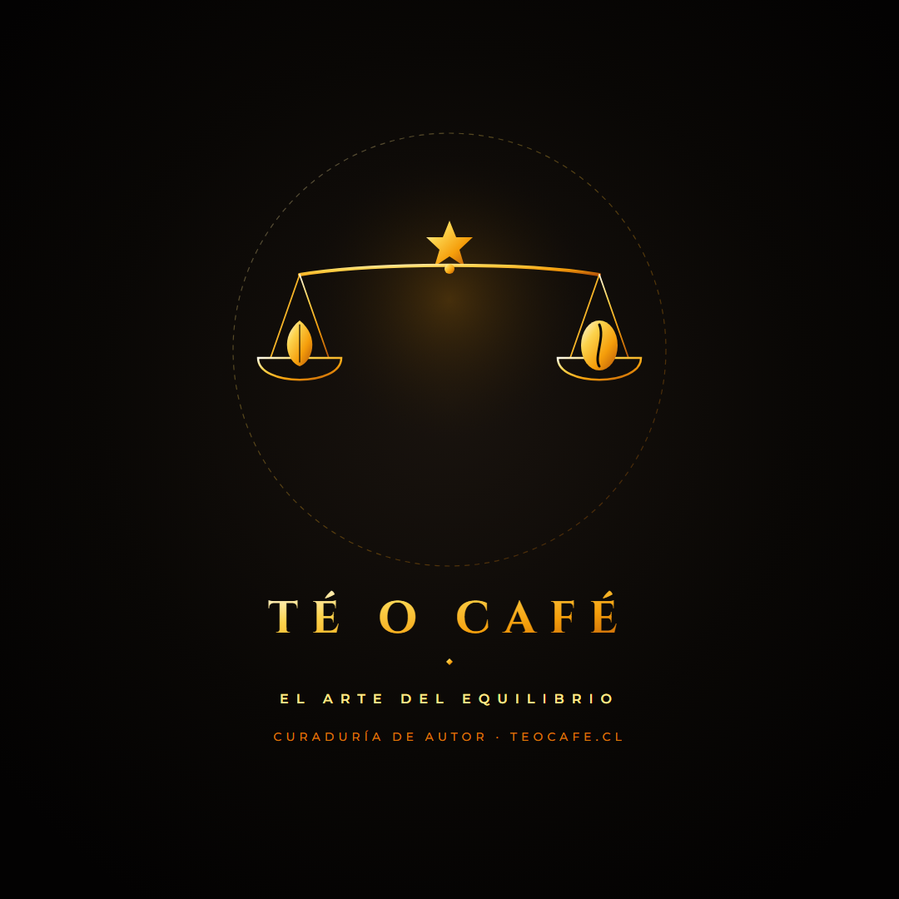
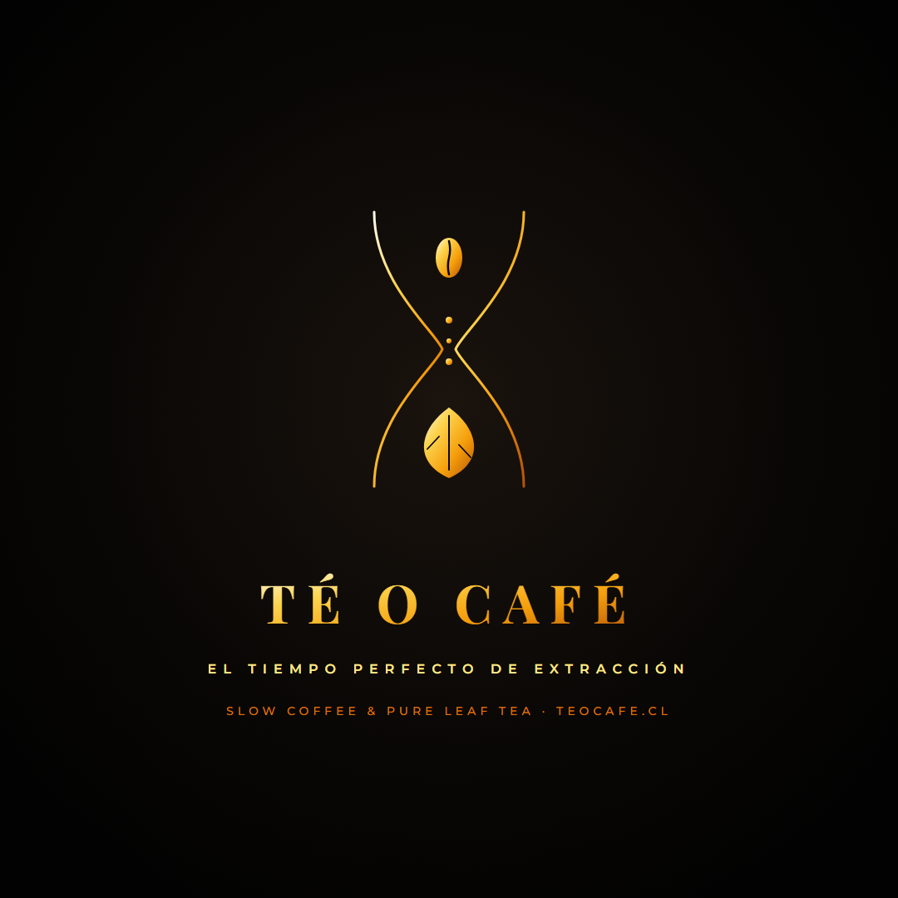
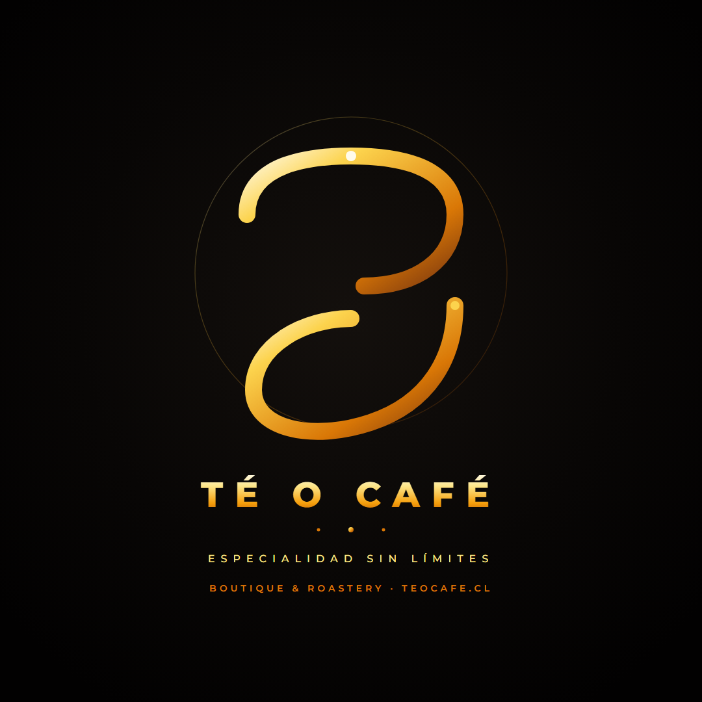
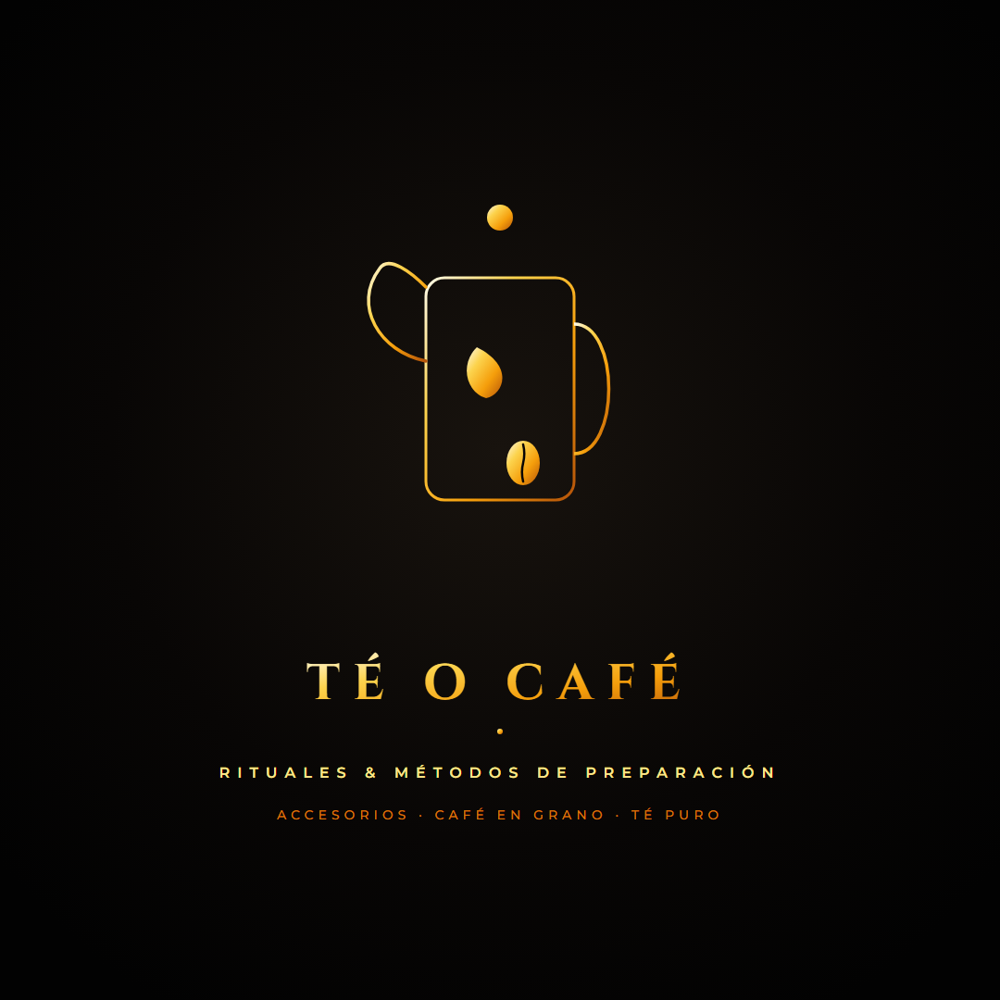
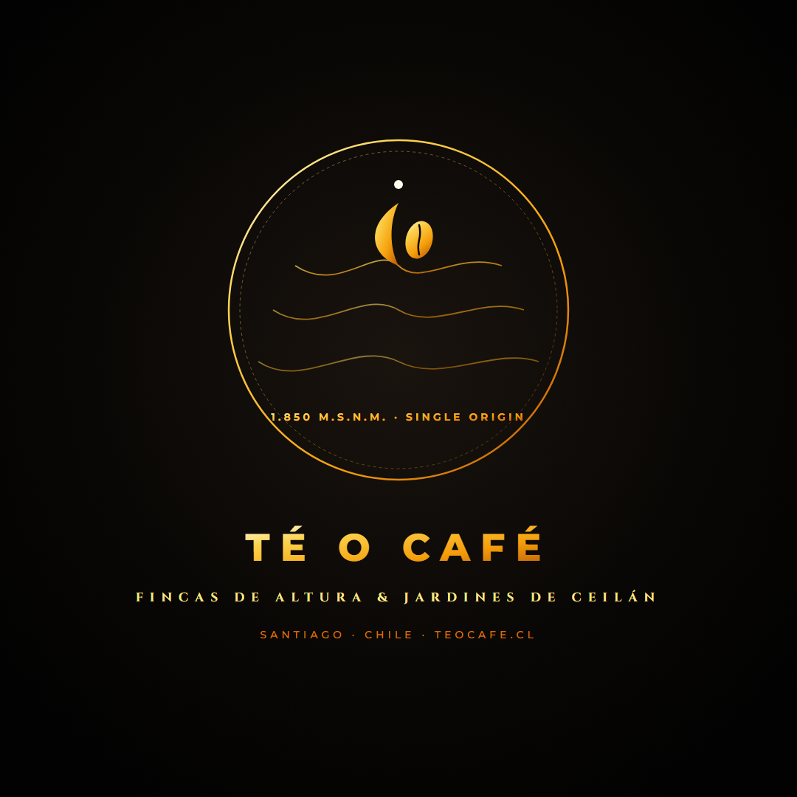

Colección 1: Filosofía & Curaduría de Autor
¡Nueva Ola!Conceptos profundos: balanza de precisión, tiempo de extracción, cinta de Möbius, cristal y terroir de altura.
La Balanza del Barista
Justificación: Representa la curaduría rigurosa. En Té o Café nada se improvisa: cada gramo de té de Ceilán y cada ratio de extracción de café se pesa con devoción artesanal.
Simbología: Platillo izquierdo con hoja de té noble, platillo derecho con grano arábica, coronados por la estrella polar de calidad.
Público: Amantes de cafés de filtro (V60, Chemex) y sommeliers que valoran la técnica y el origen.



El Reloj de Arena (Extracción)
Justificación: El tiempo es el ingrediente invisible: los 4 minutos exactos de infusión del té Basilur y los 28 segundos de extracción del espresso perfecto.
Simbología: En la cámara superior el café gotea en gotas de oro y en la inferior florecen las hojas de té noble.
Público: Consumidores que valoran la pausa consciente, la calma y el hedonismo diario frente a la prisa.



Cinta de Möbius Escultural
Justificación: Una cinta tridimensional continua de oro pulido que se pliega en el espacio formando la `T` y la `C` en un bucle infinito.
Simbología: Continuidad infinita. Une las tierras altas de Sri Lanka con las fincas cafeteras de Sudamérica.
Público: Regalos corporativos de alta gama, cajas de suscripción prémium y público aspiracional.



El Atelier de Cristal
Justificación: Síntesis lineal que fusiona la icónica prensa francesa con el pico elegante de una tetera inglesa de cuello de cisne.
Simbología: Habla de productos reales, métodos de infusión manuales y la cristalería de barista.
Público: Compradores de cafeteras, prensas, teteras y entusiastas de preparar bebidas en casa.



El Terroir Topográfico
Justificación: El café de especialidad y el té noble de Ceilán solo alcanzan notas extraordinarias gracias a la altitud y el suelo volcánico de origen.
Simbología: Curvas de nivel montañosas a más de 1.850 m.s.n.m. con el brote y el grano coronando la cumbre.
Público: Connoisseurs de microlotes de origen único, trazabilidad y sostenibilidad.



Colección 2: Vanguardia & Minimalismo
ModernaEstilos limpios de revista editorial, geometría pura estilo Kioto, The Golden O y arte zen.
The Golden "O"
Justificación: Convierte la letra "O" en el puente visual definitivo. Un aro en proporción áurea que fusiona la hoja de té y el grano de café.
Simbología: Equilibrio taoísta / yin-yang contemporáneo adaptado al mundo de la infusión.
Público: Masivo, memorable e insuperable para avatares móviles de redes sociales.


Editorial Didot (Quiet Luxury)
Justificación: Máxima sofisticación tipográfica estilo Bacha Coffee o perfumería francesa. Líneas hairline con serifas afiladas.
Simbología: Micro-rama botánica cruzando una gota dorada de café y marco de coordenadas.
Público: Consumidores de lujo silencioso, diseño editorial y eventos prémium.


Minimalismo Geométrico
Justificación: Vanguardia arquitectónica japonesa. Bloques limpios que sintetizan la T y la C con una hoja áurea y un grano en corte oblicuo.
Simbología: Racionalismo, proporción moderna y pureza geométrica.
Público: Jóvenes profesionales, baristas modernos y creadores de contenido digital.


Nordic Specialty (Octágono)
Justificación: Tostaduría nórdica de tercera ola (Nomad, The Barn). Escudo octogonal con vista de pájaro de taza de cata.
Simbología: Infusión en hebras vista desde arriba y división simétrica del grano.
Público: Aficionados al café de tostado claro y té de origen en hebra suelta.


Zen Ensō de Autor
Justificación: Trazo circular japonés Ensō abierto en pan de oro. Expresa iluminación, imperfección hermosa (wabi-sabi) y calma.
Simbología: Gotita de esencia pura flotando sobre el brote botánico y el grano tostado.
Público: Amantes de la ceremonia del té, matcha, bienestar y café orgánico.


Colección 3: Heritage & Tradición Europea
Sellos de cera, monogramas con estrellas, blasones heráldicos y medallas de tostaduría.
El Sello de Autor
Justificación: Medalla circular inspirada en los sellos reales de té británico. Transmite solidez y tradición centenaria.
Simbología: Hoja de té de Ceilán simétrica al grano arábica con doble orla concéntrica y estrellas.
Público: Clientes tradicionales que valoran la confianza, la herencia y sellos de cera.


Monograma TC de Lujo
Justificación: Iniciales clásicas entrelazadas en serifas romanas con corona de estrellas facetadas.
Simbología: Enlace fraterno entre té y café.
Público: Merchandising textil, delantales de barista y bordados.


Alquimia Botánica
Justificación: Rama de hojas de té de Ceilán grabadas que abrazan la silueta curva del grano de café tostado.
Simbología: Fusión de naturaleza y proceso térmico de tueste.
Público: Entusiastas de productos orgánicos, botánicos y sustentables.


Taza de Cata & Hoja Naciente
Justificación: Taza de porcelana de cata profesional cuyo vapor ascendente se transforma en hoja y gota dorada.
Simbología: Experiencia aromática y calidez de servicio.
Público: Catadores, salones de té y cartas de cafetería de mesa.


Blasón Tostaduría 2026
Justificación: Escudo europeo cuartelado con hoja de té, grano tostado, año de fundación y estrella polar.
Simbología: Linaje, tostaduría tradicional y sello de distinción.
Público: Ediciones limitadas, cajas de madera y etiquetas de colección.


Recursos Listos para Descargar
Usa estos archivos para configurar el perfil de Instagram @teocafe.cl y estampar la marca de agua sobre las fotos reales de café, té Basilur y cafeteras.
Avatar Instagram (Fondo Noir)
1080x1080 px listo para perfil.

Watermark Oro Transparente
Para estampar sobre fotos oscuras.

Watermark Blanco Transparente
Para estampar sobre fotos de fondo cálido.

Post Oficial de Lanzamiento
1080x1080 px para feed de Instagram.